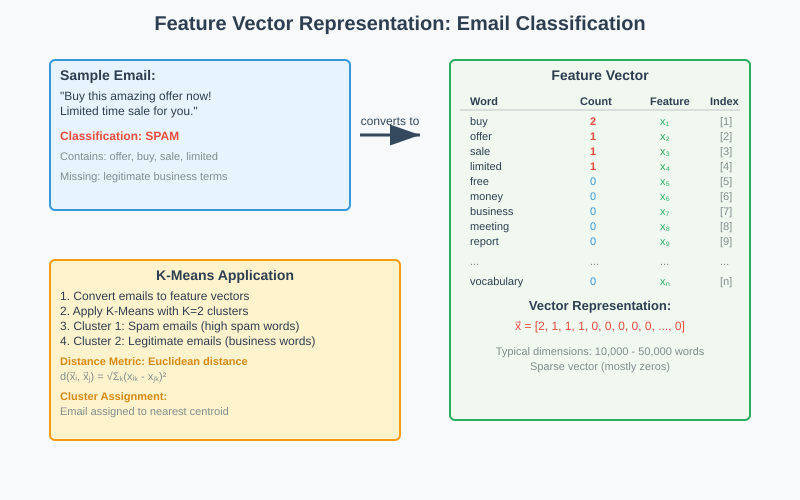
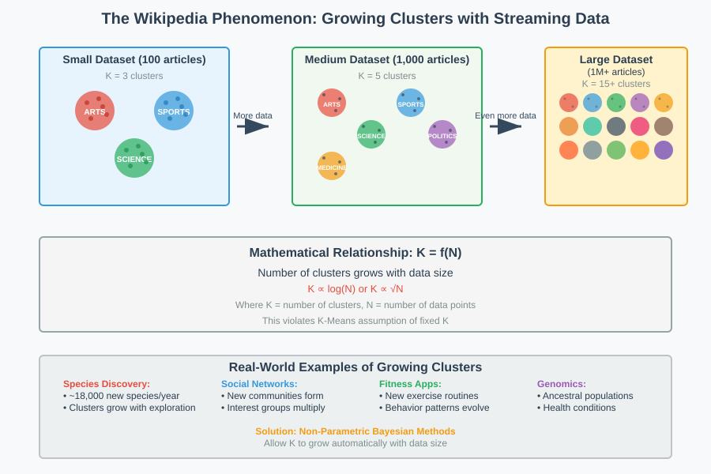
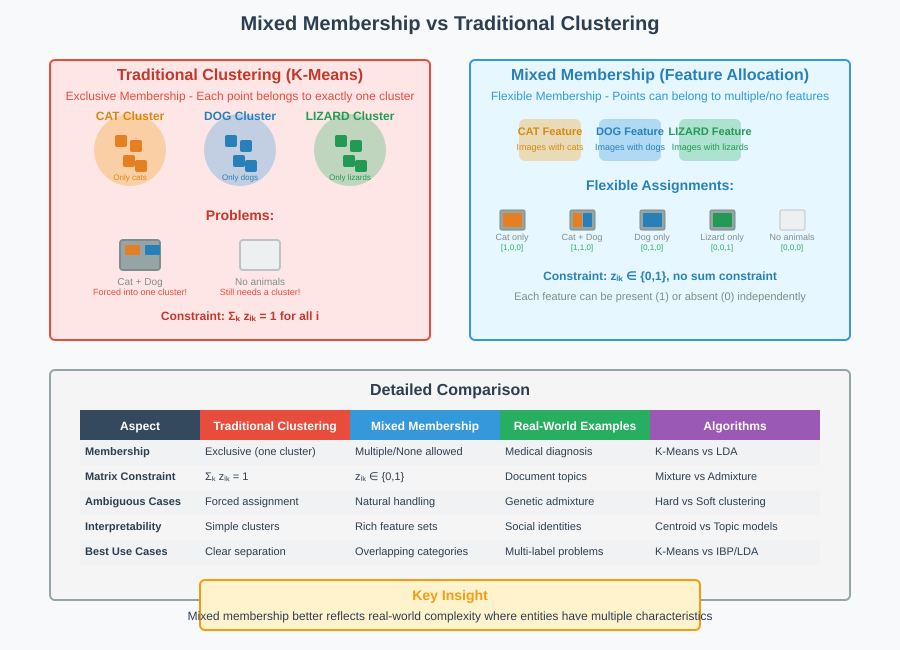
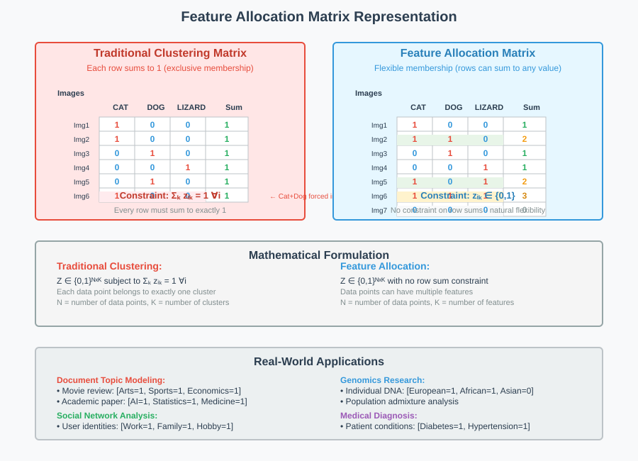

K-Means Clustering Assumptions and Limitations
🧭 Quick Navigation
- Introduction
- K-Means Clustering Recap
- Assumption 1: Fixed Number of Clusters (K)
- Assumption 2: Exclusive Cluster Membership
- Alternative Approaches
- Model Comparison
- Implementation Examples
- References & Further Reading
Introduction
K-Means clustering is one of the most widely used unsupervised learning algorithms for finding grouping structures in data. However, like all algorithms, K-Means makes several key assumptions that may not always hold true for real-world datasets. Understanding these assumptions and their limitations is crucial for determining when K-Means is appropriate and when alternative approaches might be better suited.
This documentation explores the two primary assumptions of K-Means clustering:
- Fixed number of clusters (K): The assumption that the number of clusters is predetermined and finite
- Exclusive cluster membership: The assumption that each data point belongs to exactly one cluster
We'll examine scenarios where these assumptions break down and explore alternative methodologies that address these limitations.
K-Means Clustering Recap
Feature Vectors and Data Representation
In K-Means clustering, our data comes in the form of feature vectors. Each data point is represented as a vector where each dimension corresponds to a specific feature or attribute.

Common Examples of Feature Vectors
Email Spam Detection - Each email is a data point - Features represent word frequencies - Vector dimensions correspond to vocabulary words - Values indicate how often each word appears
Image Analysis
- Each image is a data point
- Features represent pixel intensities
- Hundreds of thousands of dimensions
- Some pixels more meaningful than others
User Preferences - Each user is a data point - Features represent movie ratings or preferences - Dimensions correspond to different genres or items - Values indicate user ratings or interaction frequency
Challenges with Feature Vector Construction
Sometimes constructing meaningful feature vectors is challenging:
- High dimensionality with mostly irrelevant features
- Noisy data that obscures important patterns
- Missing feature relationships (e.g., social networks where we only know connections)
In cases where traditional feature vectors are inadequate, we may need to construct new features or use alternative representations like graphs.
Assumption 1: Fixed Number of Clusters (K)
The Fixed K Problem
K-Means assumes that the number of clusters K is: - Predetermined and known in advance - Fixed and finite - Constant regardless of data size
This assumption becomes problematic in many real-world scenarios, particularly with streaming data.

The Wikipedia Phenomenon
Consider Wikipedia articles as an example:
Small Dataset (100 articles) - Might find 3-4 main topics: Arts, Sports, Science
Larger Dataset (1,000 articles)
- Discover new topics: Medicine, Politics
Very Large Dataset (1,000,000+ articles) - Continuously discover new specialized topics - Number of meaningful clusters grows with data size
Mathematical Representation
For streaming data, the relationship between data size and clusters can be expressed as:
Where: - \(K\) = number of clusters - \(N\) = number of data points - \(f\) = some increasing function
This violates K-Means' assumption that \(K\) is constant.
Real-World Examples of Growing Clusters
- Species Discovery
- New species continuously discovered
- Current rate: ~18,000 new species per year
-
Total clusters (species) grow with research effort
-
Social Networks
- New user groups form as platform grows
- Interest communities emerge organically
-
Friend groups multiply with user base
-
Fitness Applications
- New exercise routines discovered
- User behavior patterns evolve
-
Activity clusters expand with user diversity
-
Genomics Research
- New ancestral populations identified
- Genetic clusters discovered with larger datasets
- Health condition patterns emerge
Solutions: Non-Parametric Bayesian Methods
Non-Parametric doesn't mean "no parameters" - it means: - Many parameters or infinitely many parameters - Parameters can grow with data size - Model complexity adapts to data
Key Approaches: - Dirichlet Process Mixture Models - Indian Buffet Process - MAD-BAYES framework
These methods allow the number of clusters to grow automatically as new data arrives.
Assumption 2: Exclusive Cluster Membership
The Exclusive Membership Problem
K-Means assumes each data point belongs to exactly one cluster. This creates issues when:
- Data points naturally belong to multiple groups
- Some data points belong to no clear group
- Real-world entities have mixed characteristics

Example: Pet Photo Website
Consider a website where users post pet photos:
Traditional Clustering Approach:
- Cat cluster: All cat photos
- Dog cluster: All dog photos
- Lizard cluster: All lizard photos
Problems with This Approach: - What about photos with both cats and dogs? - What about photos with no animals? - Photos must be forced into exactly one category
Feature Allocation vs Clustering
Instead of clustering (exclusive membership), we can use Feature Allocation:

Feature Allocation Characteristics: - Data points can belong to multiple groups simultaneously - Data points can belong to no groups - Data points can belong to just one group - Uses binary matrix representation (0s and 1s)
Mathematical Representation
Clustering Matrix (each row sums to 1): \(\(\sum_{k=1}^{K} z_{ik} = 1 \quad \forall i\)\)
Feature Allocation Matrix (no constraint on row sums): \(\(\sum_{k=1}^{K} z_{ik} \geq 0 \quad \forall i\)\)
Where \(z_{ik} \in \{0,1\}\) indicates membership of data point \(i\) in group \(k\).
Real-World Examples of Mixed Membership
- Document Topic Modeling
- Movie review: Arts + Sports + Economics
- News articles cover multiple themes
-
Academic papers span multiple fields
-
Genomics
- Individual DNA from multiple ancestral groups
- Genetic admixture in populations
-
Complex inheritance patterns
-
Social Networks
- Multiple social identities: work, family, hobby groups
- Overlapping communities
-
Context-dependent relationships
-
Medical Diagnosis
- Patients with multiple conditions
- Comorbidity patterns
- Symptom overlaps
Terminology: Mixed Membership Models
Feature Allocation = Mixed Membership = Admixture Model
All three terms describe the same concept: data points can belong to multiple groups simultaneously.
Mixture Model (traditional clustering): - Each data point from exactly one group - Groups form the "mixture"
Admixture Model (mixed membership): - Each data point can be from multiple groups - Groups can be "mixed" within data points
Alternative Approaches
For Growing Number of Clusters
Non-Parametric Bayesian Methods:
- Dirichlet Process Mixture Models
- Infinite mixture components
- Only instantiate used components
-
Automatic model selection
-
MAD-BAYES Framework
- Converts non-parametric models to K-Means-like algorithms
- Maintains simplicity of K-Means
- Allows growing complexity
Practical Algorithms: - DP-Means: Dirichlet Process version of K-Means - BP-Means: Beta Process version of K-Means
For Mixed Membership
Latent Dirichlet Allocation (LDA): - Originally designed for text data - Assigns topic probabilities to documents - Extensible to other categorical data
Key Features: - Documents can have multiple topics - Topic proportions vary by document - Learns topic-word distributions
Extensions: - Genetic data: Population admixture analysis - Image data: Object co-occurrence - Social networks: Community overlap detection
Graph-Based Approaches
When feature vectors are unavailable (e.g., social networks):

Spectral Clustering: - Uses graph structure directly - Finds communities through eigenanalysis - No explicit feature vectors needed
Graph Neural Networks: - Learn node representations - Capture network topology - Enable clustering in graph space
Model Comparison
| Aspect | K-Means | Non-Parametric | Mixed Membership | Graph-Based |
|---|---|---|---|---|
| Number of Clusters | Fixed K | Grows with data | Fixed or growing | Detected automatically |
| Membership Type | Exclusive | Exclusive | Multiple allowed | Flexible |
| Data Requirements | Feature vectors | Feature vectors | Feature vectors | Graph/relationships |
| Computational Complexity | O(nkt) | Higher | Higher | Varies |
| Interpretability | High | Medium | High | Medium |
| Scalability | Excellent | Good | Good | Varies |
| Best Use Cases | Well-separated clusters | Streaming data | Mixed characteristics | Network data |
Legend:
- n = number of data points
- k = number of clusters
- t = number of iterations
When to Use Each Approach
Use K-Means when: - Number of clusters is known and fixed - Clear cluster separation exists - Exclusive membership is appropriate - Computational efficiency is critical
Use Non-Parametric methods when: - Number of clusters unknown - Working with streaming data - Expecting new cluster types - Model complexity should grow with data
Use Mixed Membership when: - Data points have multiple characteristics - Overlapping categories exist - Soft assignments preferred - Rich data interpretation needed
Use Graph-Based methods when: - Working with network data - Relationships more important than features - Traditional features unavailable - Community structure exists
Implementation Examples
Google Colab Integration

Basic K-Means Implementation
from sklearn.cluster import KMeans
import numpy as np
import matplotlib.pyplot as plt
# Generate sample data
X = np.random.rand(100, 2)
# Apply K-Means with fixed K=3
kmeans = KMeans(n_clusters=3, random_state=42)
labels = kmeans.fit_predict(X)
# Visualize results
plt.scatter(X[:, 0], X[:, 1], c=labels)
plt.title('K-Means Clustering (Fixed K=3)')
plt.show()
Streaming Data Simulation
import numpy as np
from sklearn.cluster import KMeans
def simulate_streaming_kmeans(max_points=1000, initial_k=2):
"""Simulate K-Means on streaming data with growing clusters"""
optimal_k_values = []
for n_points in range(50, max_points, 50):
# Generate streaming data
data = np.random.rand(n_points, 2)
# Try different K values
inertias = []
k_range = range(1, min(n_points//10, 20))
for k in k_range:
kmeans = KMeans(n_clusters=k, random_state=42)
kmeans.fit(data)
inertias.append(kmeans.inertia_)
# Find elbow point (simplified)
optimal_k = find_elbow(inertias) + 1
optimal_k_values.append(optimal_k)
return optimal_k_values
def find_elbow(inertias):
"""Simple elbow detection"""
diffs = np.diff(inertias)
return np.argmax(diffs[:-1] - diffs[1:])
Mixed Membership with LDA
from sklearn.decomposition import LatentDirichletAllocation
from sklearn.feature_extraction.text import CountVectorizer
# Sample documents
documents = [
"baseball game sports player team",
"movie film actor entertainment arts",
"stock market economy business finance",
"baseball economics player salary business", # Mixed: sports + economics
"film festival arts entertainment culture" # Mixed: arts + culture
]
# Vectorize documents
vectorizer = CountVectorizer()
X = vectorizer.fit_transform(documents)
# Apply LDA for mixed membership
lda = LatentDirichletAllocation(n_components=3, random_state=42)
topic_distributions = lda.fit_transform(X)
# Each document now has probabilities for each topic
print("Topic distributions per document:")
for i, dist in enumerate(topic_distributions):
print(f"Document {i+1}: {dist.round(3)}")
Hugging Face Models
Relevant pre-trained models for clustering and topic modeling:
- sentence-transformers/all-MiniLM-L6-v2: For generating embeddings before clustering
- cardiffnlp/tweet-topic-21-multi: Multi-label topic classification
- microsoft/DialoGPT-medium: For understanding conversational context in social networks
References & Further Reading
Academic Papers
- Infinite Mixtures of Gaussian Process Experts - Rasmussen & Ghahramani (2002)
-
Foundation paper on infinite mixture models
-
Latent Dirichlet Allocation - Blei, Ng & Jordan (2003)
-
Seminal work on mixed membership models
-
The Indian Buffet Process - Griffiths & Ghahramani (2006)
-
Non-parametric feature allocation
-
MAD-Bayes: MAP-based Asymptotic Derivations - Broderick et al. (2013)
- Framework for converting Bayesian methods to simpler algorithms
Books and Textbooks
- Pattern Recognition and Machine Learning - Christopher Bishop (2006)
- Chapter 9: Mixture Models and EM
-
Comprehensive coverage of clustering assumptions
-
Bayesian Data Analysis - Gelman et al. (2013)
- Advanced treatment of non-parametric methods
Online Resources
- Scikit-learn Clustering Documentation
-
Practical implementation guide
- Theoretical foundation of K-Means and mixture models
Implementation Resources
- scikit-learn: Standard machine learning library
- gensim: Topic modeling and LDA implementation
- pyro: Probabilistic programming for Bayesian methods
- networkx: Graph analysis and community detection
Documentation created for educational purposes. For the latest updates and additional resources, visit our GitHub repository.